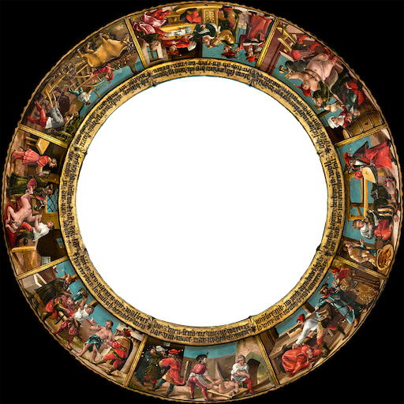

Der Ambraser Narrenteller von 1528 Interaktiv
Schloss Ambras Innsbruck
Kunstkammer Inv. Nr. KK 4955
Konzeption
PROF. DR. WERNER MEZGER
Technische Umsetzung
PETER BANDLE
Sprecher
SASCHA OLIVER BAUER, PATRICK GIESE, KARL HEINZ HERBER,
MARKUS MANIG, TOM SOLO, KATRIN WEBER
Unterstützt von
PROF. DR. ULLRICH DITTLER
VERA JOVIC-BURGER
SARAY PAREDES ZAVALA
Leitender Produzent
ROLAND WEHRLE
Entstanden im Rahmen des Projekts „museum4punkt0“
gefördert durch die Bundesbeauftragte für Kultur und Medien
aufgrund eines Beschlusses des Deutschen Bundestags
Mit Genehmigung des Kunsthistorischen Museums Wien
KHM Museumsverband
Wir danken:
Schloss Ambras Innsbruck
Frau Direktorin Dr. Veronika Sandbichler
Abt. Reproduktions- und Bildrechte
des Kunsthistorischen Museums Wien
für hochauflösende Fotos des Narrentellers Inv. Nr. KK 4955